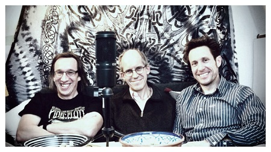

Aber bitte mit Soze
Nächste Perspektivdrehung führt uns in den Bereich der sozialen Arbeit. Ist Selbstorganisation hier ein Selbstläufer? Lernt hier der Agile-Zirkushund neue Tricks?
ReinhörenDer Aachener Podcast für Zusammenarbeit in agilen Organisationen
In dieser Folge spielen wir Buzzword-Bingo mit Tiefgang: Ätsch Isle, Schkramm, der Manni Festo und weitere Vokabeln erklären wir einmal ganz in Ruhe und mit Kaltgetränk in der Hand. Zudem berichten wir vom Scrumtisch Aachen Treffen zum Thema “Agile-Anwendung in der Baubranche”
Vorneweg schon mal das größte Update: Mit dieser Folge ist unser Team gewachsen. Unser letzter Gast Markus ist seit der letzten Folge einfach auf der Couch sitzen geblieben und hat uns zu einem Trio komplementiert. Wir sagen herzlich willkommen und freuen uns auf den gemeinsamen Weg mit Markus.

In dieser Folge spielen wir Buzzword-Bingo mit Tiefgang: Ätsch Isle, Schkramm, der Manni Festo und weitere Vokabeln erklären wir einmal ganz in Ruhe und mit Kaltgetränk in der Hand.
Daneben werfen wir einen Blick zurück zum letzten Scrumtisch Aachen Treffen zum Thema “Agile-Anwendung in der Baubranche”.
Ein großes Dankeschön für das formvollendete Intro-Feature von Stefan Klein, der seinerseits mit zwei Kollegen (“die drei PodCastZeichen”) einen sehr empfehlenswerten Öcher PodCast über die beliebte Kult-Hörspielreihe “Die drei ???” betreibt. Wer mehr erfahren und hören will, schaut und lauscht einfach mal auf:
www.rescherschen-und-arschiv.de
OK. Genug der Vorrede, Textbuch aufschlagen auf Seite 71 und Stift sowie Papier bereit halten.
Wer über die Folge hinaus an persönlicher Nachhilfe interessiert ist oder einfach nur Feedback für uns hat. Gucksu hier, schreibsu Elektropost "
In Liebe Euer pädagogisches Personal
Markus, Chris & Joshua
Agile Frameworks + development practices
Es gibt in der Welt der agilen Software-Entwicklung viele verschiedene Methoden und Anwendungen
Agile Manifesto
Das Manifest besteht zunächst aus vier Werte-Paaren. Die Autoren des Manifestes wollen eine Balance dieser Wertepaare herstellen. Da sie sehen dass in der Vergangenheit jeweils eine der Seiten zu viel Gewicht erhalten hat, betonen sie die Bedeutung der anderen Seite des Wertepaares
Das Manifest wird durch 12 Prinzipien ergänzt, die konkretere Hinweise geben, wie die Intention des Manifests in der Praxis umgesetzt werden kann:
Die Beschreibung der Autoren zur Geschichte des Manifestes gibt eine Einblick in die Haltung, die dahinter steckt:
Lean
In der Autofirma Toyota wurden Arbeitsprinzipien entwickelt, die als TPS Toyota Production System bekannt wurden:
Buchtip: “Das ist Lean: die Lösung des Effizienzparadoxes” von Niklas Modig
Scrum
Für Scrum gibt es genau eine offizielle Definition - alle angepassten Arbeitsweisen mögen zwar agile sein, aber halt eben nicht Scrum
Was ist ein Scrum Master
Wasserfallmodell für Software Projekte
Nächster Scrumtisch Aachen
Next month’s topic will be Steve Tendon’s and Daniel Doiron’s “Tame your Work Flow”. Germany’s first trainer for “Mastering Flow” and “Mastering Throughput”, Michael explains how this new approach opens the door for better organizational outcomes. If you are interested in hosting the event send me a message and we’ll arrange something. Thanks, Markus
Termin steht noch nicht fest.
Neuste Musikbeiträge von unseren Gästen und uns (Update 03/2020):
(https://open.spotify.com/playlist/7JhdzxbDsQ5HByfS4KjI5e?si=zbzErbulQUqPZ12GdhNIwQ)
Neue Musikbeiträge (Update 02/2020):
Gravenhurst : “Song from under the arches”
Cake : “War Pigs” (Sabbath Cover)
Stereo MCs : “Connected”
Shakey Graves : “Late July”
alt-J : “Taro”
Galactic : “Crazy Horse Mongoose”
Alabama Shakes : “Don’t wanna fight”
Ludoviki Einaudi : “Divenire”
Marillion : “Pseudo Silk Kimono”
Johnny Clegg et Savuka : “I call your name”
Nächste Perspektivdrehung führt uns in den Bereich der sozialen Arbeit. Ist Selbstorganisation hier ein Selbstläufer? Lernt hier der Agile-Zirkushund neue Tricks?
ReinhörenRechts-Links-Rechts-Rechts-Links- ...und immer schön im Flow bleiben. Wir sprechen mit Agile Coach Andreas G. Wittler über Scrum Rudiments.
ReinhörenWie sollen wir später im Beruf Selbstorganisation im Blut haben, wenn unsere Schulen das nicht intravenös injezieren? Wir sprachen dazu mit Lehrern.
ReinhörenWir sprechen mit dem Autoritätsforscher und Autor Frank H. Baumann-Habersack u.a über sein Buch ''Mit neuer Autoratität in Führung''
ReinhörenUnser zweiter Gast Peter Pröll, Coach und Moderator für Organisationsentwicklung & Agile Transformationen, stellt uns den Prinzipiensatz des BetaCodex vor.
ReinhörenWir spielen Buzzword-Bingo mit Tiefgang: Ätsch Isle, Schkramm, der Manni Festo und weitere Vokabeln erklären wir Euch einmal ganz in Ruhe.
ReinhörenWir begrüßen unseren ersten Gast und sprechen über die Haltung von Marshall Rosenberg und seinem Vorschlag einer Gewaltfreien Kommunikation
ReinhörenWas ist das? Wozu braucht man es? Wie geht das? Woran kann es scheitern? All das und mehr erfahrt ihr in einer knappen Stunde Diskussion.
ReinhörenJoshua und Chris erläutern warum und für wen wir sie unter die PodCastLer gegangen sind. Und teilen weitere Verrücktheiten rund um unseren geliebten Daily.
Reinhören